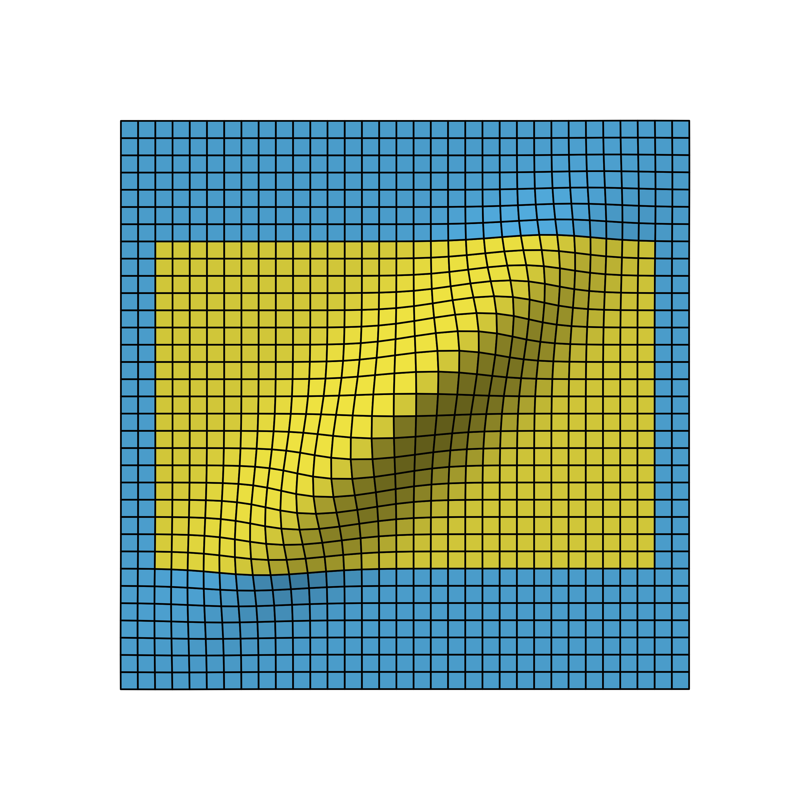
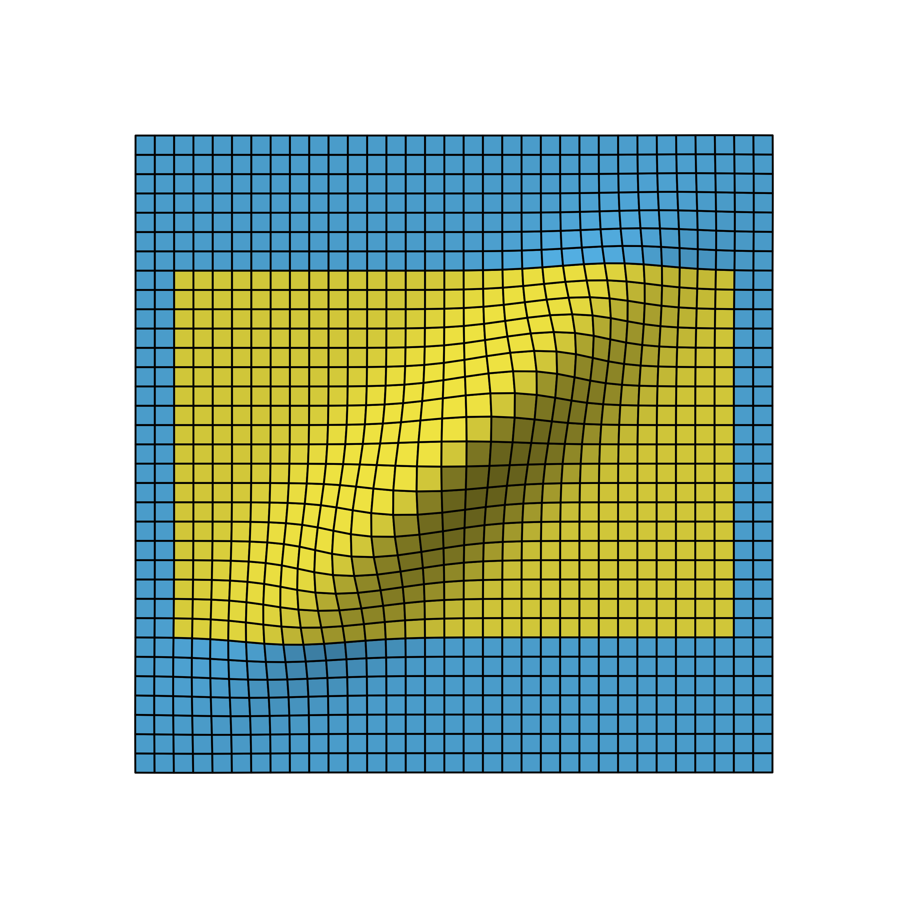

Understanding group sequential designs
Source:vignettes/understanding-gs-designs.Rmd
understanding-gs-designs.RmdWhile calculating probabilities of group sequential designs can be considered somewhat complex, it may be less difficult than most people think. This vignette provides a visual explanation of the underlying method to help forming an intuitive understanding of this topic. The author is convinced that gaining an intuitive understanding of these calculations helps when applying and interpreting such designs in practice.
One-sample study
Following the easy-to-hard principle, we start with conventional non-sequential study designs and gradually progress to the group sequential case.
Consider you have a sample of data, let’s call it
X1.

Schematic view of a study sample - each circle represents some measurement.
Usually some standardized test statistic is calculated and,
assuming standard normally distributed data, the density distribution
under the null hypothesis forms the well-known bell-shaped curve.
Standard Normal Density with critial bounds marking 5% significance level.
If a two-sided test is planned with a significance level of
,
the critical bounds are set as visualized in the above figure. In the
days before computers these bounds had to be looked up in tables in some
book, but these days of course you just plug-in the numbers in your
favorite statistics program. In R its
qnorm(0.025)
# [1] -1.959963985Now what do these bounds mean? Basically, if the null hypothesis () was true, the probability of obtaining a test statistic at or beyond these bounds is , which therefore limits the so-called type I error (rejecting although its true) at 5%.
Going forward the key thing to note here is that calculating this probability basically means calculating the (blue) area under the density curve (see above figure). Again, these days it’s easy to derive the area using computer’s numerical integration.
Combining two studies
Now lets consider another sample X2 that was collected
independently from X1.

If we construct a distribution similar to the one above, we have
the following.
A statistical test on both samples now would control the type I
error for each of these studies at the 5% level, but, of course, things
are more complicated if you consider both samples at the same time,
because now you have two chances of conducting the type I error.
So if we assume our samples X1 and X2 were
sampled from the same population and we are interested to test the same
outcome, to control the overall type I error still at 5% we
need to down-adjust alpha. The simplest and most common approach is to
use the Bonferroni correction, which means we are allowed to spend
.
The corresponding adjusted critical bound is
qnorm(0.025/2)
# [1] -2.241402728and we have
So if we calculate the overall type I error probability, we sum up all the areas and get . So we are good, are we? Well, the devil is in the details.
Remember, the goal was to make sure that we don’t conduct a type I
error. The probability to conduct no type I at either
X1 or X2 is
.
From this it follows that the probability to conduct no error at both
X1 and X2 is
.
Now we can calculate the complementary probability of conducting at least one type I error as . Wait, why is it not 5%? Well, the reason is that we don’t care if one or both studies produce a type I error, as one error is already enough for the overall setup to fail. As a result, the Bonferroni correction is not optimal, as it “wastes” 0.1% of alpha.
Of course, this is well-known and a precise alpha adjustment can
be derived via the so-called Sidak
correction:
.
Plugging this into the above formula, we get . If you are interested, you can find the derivation of Sidak’s formula under the link, but I have promised you to provide intuitive explanations, so let’s move to the key concept that will also help to understand group sequential probabilities.
Combining two distributions
If we want to combine both studies, it makes sense to combine the two density distributions into a two-dimensional (aka bivariate) normal distribution, which then looks like this.

Remember that determining the probability of distributions is all about doing numerical integration under the curve, that is, the overall type I error now is derived by computing the volume under the blue area. To do this, we are using the mvtnorm package.1
If we plug in the Bonferroni bounds (2.2414) in each dimension and calculate the probability for the blue area, we get p = 0.049375 while the Sidak bounds (2.2365) yield p = 0.05, which matches our results from above.
However, we now also have a graphical intuitive interpretation to explain the results. For this, have a look at the next graph.

The grey areas basically mark those scenarios where the type I errors of both samples fall together. The intuitive explanation now goes like this: when calculating the overall probability using the two-dimensional normal distribution, the grey areas are only counted once whereas in the one-dimensional Bonferroni case you count them twice. To see this, we can calculate the probability for one of these edges, which is p = 0.00016, and if we subtract them from the overall alpha we get , which corresponds to the overall probability under Bonferroni correction as we saw above.
So when using the two-dimensional normal distribution, we naturally derive at the optimal solution for the alpha adjustment. The same is true for group sequential designs, which further optimize the calculation by taking into account the dependency of the staged samples.
Group sequential study
In a (group) sequential study design, samples are analyzed in a sequence where at each stage all the data from earlier stages are combined with the data of the current stage.
For example, in the first stage we collect a sample X1
and in a second stage we combine the sample X1 with a new
sample X2.

The crucial difference when combining the samples in this way is that
now they are inherently dependent, that is, the statistic of sample
X1 + X2 will be correlated to the that of sample
X1.
With this in mind, the graphical presentation below is more precise to visualize the data sample setup.
Schematic view of group sequential two-stage study.
The naive approach for the alpha adjustment again would be to treat both density distributions as independent and apply the Bonferroni correction.
Normal densities for stage 1 and 2 with Bonferroni bounds.
Since this completely ignores the correlation, we expect that even more alpha is wasted. To see this let’s now again use the two-dimensional distribution.
Bivariate normal density of two-stage design viewed from different angles.
We again omit the details on how to derive the distribution, but as you can see, the correlation leads to a flattened bell curve, which in the independent case before was perfectly symmetrical. Also the amount of correlation is proportional to the data overlap of the stages. For example, if the first stage used 5 instead of the 10 data points, the stages would be less correlated and therefore the bell curve less flattened.
Based on this distribution, the Bonferroni bounds (2.24) now yield p = 0.043 so that for this group sequential study 0.7% of alpha would be “wasted”.
Intuitively, the flattened curve has pulled some mass into the middle leaving less volume under the blue area.
Pocock design
The idea of group sequential designs obviously is to come up with bounds that lead to overall 5% type I error. Let’s start with so-called Pocock bounds, which means we want equal bounds at all stages. Using the GroupSeq package, these can be derived as follows.


So the Pocock bounds are 2.1783 and thus as expected lower than the Bonferroni bounds. The last entry in the ‘cumulative alpha’ column shows the overall alpha, which is close to 5%.2
Inspecting the probabilities stage by stage, 2.93% of alpha is spent at the first and 2.04% at the second stage, respectively. That is, although the nominal bounds are identical at both stages, due to the asymmetric shape of the two-dimensional distribution, the resulting probabilities are different.
The graphical presentation of group sequential designs normally is done with a graph showing at the x-axis the “Information Rate”, which marks the relative sample size of the respective stages, and the nominal bounds at the y-axis. The above Pocock design thus looks something like this.

Group sequential 2-stage Pocock design with one interim look at half of the total samples.
O’Brien-Fleming design
Probably the most popular group sequential design is the O’Brien-Fleming design. For our two-stage scenario with half of the sample used in each stage, it looks like this.
Group sequential 2-stage O’Brien-Fleming design with one interim look at 0.5.
The numbers are outlined below.

Clearly the critical bounds at stage one are very conservative so that only 0.3% of alpha is spent there. With spending 4.7% of alpha at the last stage this O’Brien-Fleming design in fact is not much different to a standard single stage study, which spends all the 5% on the full sample. Basically, the first stage is kind of a shot in the dark to allow catching really big effects.
In contrast, the Pocock design appears to be more “aggressive” trying harder to terminate the study early. Of course, the drawback of the Pocock strategy is that if the study cannot be terminated after the first stage, it then only has about 2% of alpha left for the final stage.
To apply the O’Brien-Fleming design more aggressively, one could plan the first stage analysis at a later time point. For example, having the first interim analysis after 70% of the samples already means that about 1.5% of alpha are spent at stage 1.
Design comparisons
To strengthen our intuitive understanding, let’s compare the Pocock and O’Brien-Fleming design in the two-dimensional density view.

Bivariate normal density with critical bounds of Pocock (left) and O’Brien-Fleming design (right) both with interim analysis after 50% of the sample.
The figure below shows how the time point of the stage 1 analysis affects the correlation of the stages and with that shapes the design probabilities.
 
Bivariate normal density of two-stage O’Brien-Fleming design with first stage after 50% (left), 70% (middle) and 90% (right) of all samples.